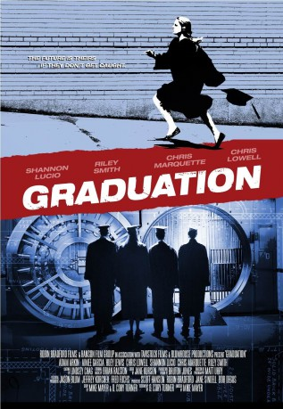

#2801 Bank Heist
Alternativ: Graduation
 
 IMDB-Wertung: 6.6 / 10
IMDB-Wertung: 6.6 / 10  Metascore: 0
Metascore: 0 
Vier Freunde, ein Problem, eine Bank. Da sind vier Freunde, die gerade die Highschool abschließen und ein Problem haben: Carls Mutter hat Krebs und braucht dringend eine Knochenmarktransplantation. Doch die Behandlung kostet eine irrsinnige Menge Geld. Als Polly entdeckt, dass ihr Vater, ein Banker, eine Affäre hat, planen die Vier, seine Bank auszurauben. Und zwar während ihrer Abschlusszeremonie. Doch die Dinge laufen nicht, wie sie geplant waren. Die Freundschaft der Vier wird auf die Probe gestellt, und sie lernen mehr über sich an diesem Tag, als während ihrer gesamten Schulzeit.
Jahr: 2007
Dauer: 88 Minuten
FSK: 12
Land: USA Studio: Redwood Palms PicturesTonspuren: DTS - ,
Untertitel: Deutsch,
Auflösung: 1080p (1920x1080) Größe: 7055 MB
Genre: Drama, Komödie, Krimi
Regisseur: Michael Mayer
Drehbuch: Michael Mayer, D. Cory Turner, D. Cory Turner
Soundtrack: Brian Ralston
Darsteller:
 Adam Arkin als Dean Deeley
Adam Arkin als Dean Deeley- Greg Benson als Sgt. Wrigley
- Jarid Faubel als Goth Senior
 Aimee Garcia als Suzy Winters
Aimee Garcia als Suzy Winters- Robert Haley als Doctor
- Brandon Hanson als Derek
- Huey Lewis als Mike
 Chris Lowell als Tom Jackson
Chris Lowell als Tom Jackson Shannon Lucio als Polly Deely
Shannon Lucio als Polly Deely Chris Marquette als Carl Jenkins
Chris Marquette als Carl Jenkins- Jennifer Massey als Barbara
- Jeff Monahan als Floyd
- Maryanne Nagel als Chauncey's Mom
- Glynnis O'Connor als Mary
 Charles David Richards als Sniper
Charles David Richards als Sniper Riley Smith als Chauncey Boyd
Riley Smith als Chauncey Boyd Lisa Ann Walter als Carol
Lisa Ann Walter als Carol- Candi Boyd als Reporter
- Amy Marsalis als News Reporter
- Trisha Simmons als Marie
- Stephanie Bertoni als Nurse , uncredited
- Matt Burns als High School Student , uncredited
 Richard Fike als Police Officer , uncredited
Richard Fike als Police Officer , uncredited William Kania als Fireman , uncredited
William Kania als Fireman , uncredited- Meritt Latimore als Teacher , uncredited
- Quantia Mali als Adult Chaperone , uncredited
- Catherine L. Albers als Mrs. Poole
- Alice Eisner als Kitchen Server
- Tommy Lafitte als Leroy Dell
- Blake Baxendell als Badboy / Jock
- Larry John Meyers als Detective Hale
- Bingo O'Malley als Mr. Ryerson
- Ian Short als Charlie
- Robert DiDonato als S.W.A.T leader
- Matthew Freas als Student
- Alanna Hanson als High School Student
- Victor A. Sandoval als Bank Costumer
- Richard S. Sargent als Goth Kid
- Jessie Spartano als Kat
- Matt Veltri als Swat team member
- Michael Joseph Thomas Ward als Principal Geibel
- Zilda Alvez als Hardware Store Customer , uncredited
- Minda Fisher als Librarian , uncredited
- Mara Herbkersman als High School Student , uncredited
- John D. Matthews als Sheriff , uncredited
- Jeremy Moon als High School Student , uncredited
 David Morse als Police Officer , uncredited
David Morse als Police Officer , uncredited- Guy A. Mussori als Hardware Store Customer , uncredited
Datei: X:\2007(A-F)\Bank Heist (2007, FSK12, 1920x1080).mkv seit 18.12.2015
Festplatte: HD 2007(A-Z)-2008(A-F)
 Es gibt insgesamt 65 Filme in der Gruppe '2007(A-F)'
Es gibt insgesamt 65 Filme in der Gruppe '2007(A-F)'